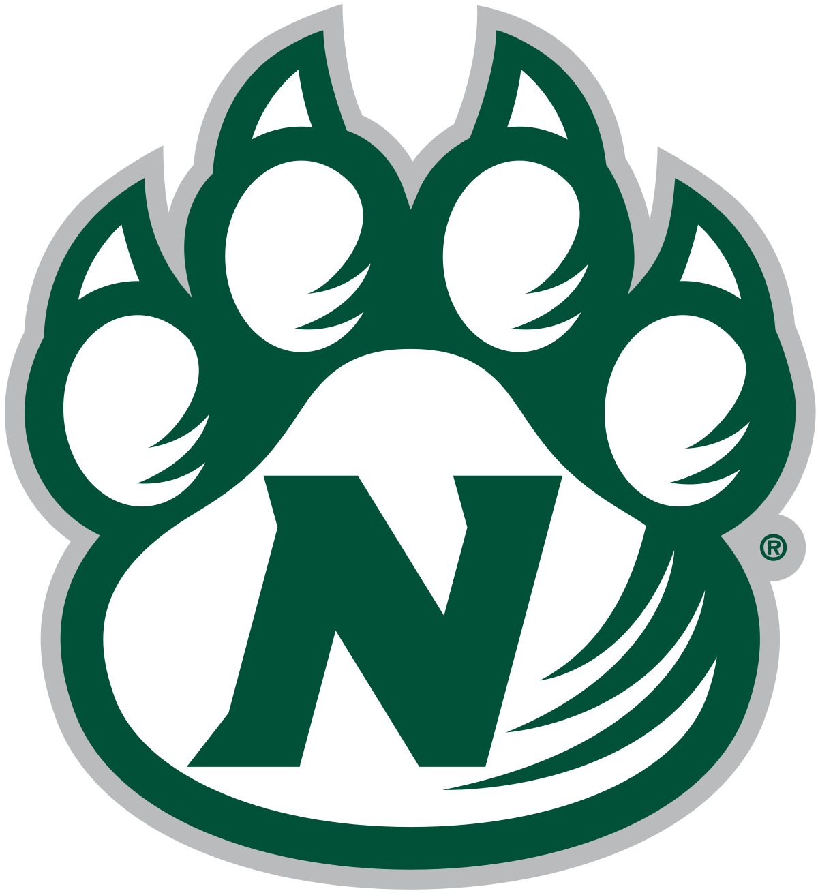

About me
I am from Omaha Nebraska. Born and raised into a Husker family. One of my favorite hobbies is to play and watch basketball. I decided to go to Northwest with some of my friends from high school. I originally was a Computer Science major but switched to Interactive Digital Media.
Future work plans
I honestly haven't really thought about it yet. I know I can do a lot of different things once I get my degree, but I haven't truly decided yet. I would say web design is probably my favorite thing about my major so working for a big company on their website would be really cool. I also have an internship lined up for next summer.
Current Schedule
- Intro to Design
- Media Design
- Web Apps
- Visualization